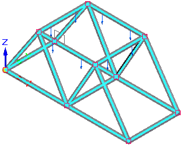
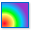
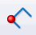
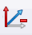

Analyze a structural frame model
In a structural frame model, beam curves are created from the design body, and the beam curves are meshed into discrete beam elements and beam element nodes.
Use the following finite element analysis process to simulate loading conditions on a frame model and determine its response at various locations on the beam cross section.

-
Open a frame model.
Tip:For practice creating a study of the structural framework model shown above, see Tutorial: Simulate stresses on a bridge.
-
Select Tools tab→Environs group→Frame
 .
.This opens the Frame environment.
-
On PathFinder, click the Simulation tab

to display the Simulation pane. -
Select the Simulation tab→Study group→New Study command , and use the Create Study dialog box to create a study.
For a structural frame model:
-
Select the Linear Static study type and the Beam mesh type.
-
(Optional) In the Connector Options section, in the Maximum rigid link length box, specify the maximum length of rigid link connectors automatically created for disjoint beams. For more information, see Rigid link connectors.
-
-
Select the model geometry to analyze—On the ribbon, click the Define command. Select the frame members to include in the study, and click Accept.
-
Define boundary conditions.
-
Define a load. In a structural frame model, you also can add a Moment load, for example, to the free end of an I-beam where the other end is fixed.
-
For a structural frame model, you also can add the following:
-
Define a node to place supplemental loads and constraints along a beam.
Note:Use the Mesh group→

Node command to place an explicit node for adding a load or constraint along a frame member. -
Define a release to release degrees of freedom on frame joints.
Note:When beam elements are connected, all six degrees of freedom are connected at each beam end. Choose the Mesh group→

Release command to specify the degrees of freedom that you do not want to connect.
-
-
-
For more information about meshing, refer to Meshes.
-
Choose the Simulation tab→Solve group→Solve command to run the simulation.

The Simulation Results environment is displayed.
-
-
Review the beam cross sections and beam diagram by selecting the following check boxes on the Home tab→Show group→Display Options menu:

-
See Beam diagrams, Beam reaction component plots, and Beam stress component plots.
-
Review the beam properties of a cross section.
-